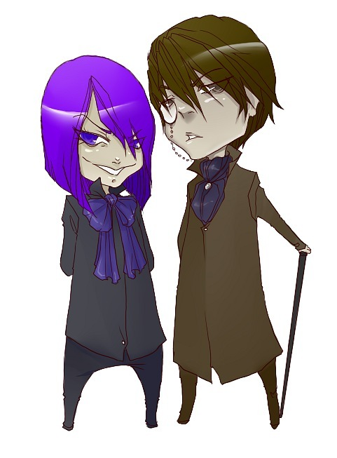
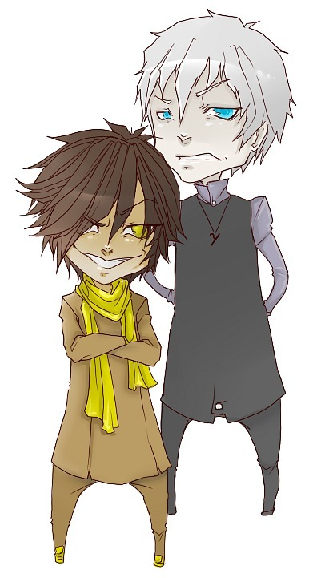
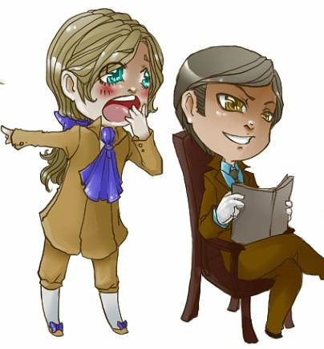

Характеры и рекомендации
ДИАДА: ИЛЭ (Дон Кихот) - СЭИ (Дюма)
ИЛЭ (Дон Кихот)
Характерные особенности ИЛЭ (Дон Кихот): находчивость, изобилие новых идей, интерес ко всему загадочному и необычному. Его мечтательность, рассеянность, устремленность в будущее, превалирование интереса над пользой не делают его практичным и расторопным хозяином в доме. Он нуждается в понимании и терпимости. Стараясь извлекать практическую пользу из своих дел или из связей, он ждет при этом поддержки более дипломатичного партнера.
Часто испытывает необходимость в новых впечатлениях и переменах, отсутствие которых может вызвать апатию и тягу к пустым развлечениям. В таких случаях может совершать поспешные и опрометчивые поступки, если его вовремя не отвлечь интересным для него занятием или идеей.
Как у иррационального типа личности, у него ярко выражены подъемы и спады работоспособности. В периоды спада его инертность не должна вызывать негодование партнера. Он обычно не планирует свои мероприятия на ближайшее время, достаточно неорганизован и не любит контроля. В спокойном состоянии расслаблен и достаточно безволен. Но если на него оказывают давление, проявляет упорство и неуступчивость, вплоть до агрессии. Ему необходим снисходительный, гибкий и тактичный партнер.
Довольно открыт и общителен. Демократичен и старается быть со всеми в хороших отношениях, но бывает то излишне доверчив, то стесняется показать расположение к человеку, в чувствах которого сомневается. Не разбирается в людях – кто друг, кто враг. Проявляет любезность, нападает и защищается не всегда адекватно. Нуждается в своевременных разъяснениях партнера по поводу взаимоотношений с окружающими.
Главный "ключик" к такому оригинальному человеку, как ИЛЭ (Дон Кихот), – умение управлять его чувствами и ощущениями. Когда он взволнован – расслабить шутками, успокоить, отвлечь, а когда в апатии – встряхнуть остротами, насмешками (не теряя при этом чувства такта и меры). Пусть партнер даже "заведется", уйдет, хлопнув дверью. Когда вернется, заинтересовать чем-то новым, увлечь интересной идеей, дать понять, что, хотя им и недовольны, но любят и желают добра. Необходимо воздействовать на его ощущения ласками, вкусной едой, музыкой, комфортом. Он нуждается в материнской заботе о нем, его здоровье и потребностях.
СЭИ (Дюма)
Это – также иррациональный тип, но это единственное, в чем он похож на своего дуала. Они оба живут, плывя по течению и во многих вещах предоставляя себя воле случая. В остальном же - полностью противоположны друг другу.
СЭИ (Дюма) – хороший дипломат, но, будучи интровертом, склонен проявлять скромность и нерешительность, осторожность и скованность с новыми людьми, поэтому предпочитает договариваться на неофициальной основе, дома или в другой непринужденной обстановке. Чувствует себя более уверенно и легко с демократичным, общительным партнером, быстро сближающим психологическую дистанцию.
СЭИ (Дюма) – мастер "челночной дипломатии", хороший примиритель спорящих, приятный и добродушный собеседник, располагающий к доверию. Ощущает себя полезным рядом с неуклюжими в отношениях людьми, дающими ему возможность показать свои способности. Любит давать советы, когда и какую инициативу надо проявлять, как следить за здоровьем, одеждой, наружностью. Внимателен и заботлив, но обижается, если в нем не нуждаются.
СЭИ (Дюма) живет настоящим, в то время как его дуал ИЛЭ (Дон Кихот) витает в облаках, думая о дальних целях. Он практичнее и реалистичнее в бытовых вопросах. Заботится о здоровом образе жизни, отдыхе и решении бытовых проблем. Любит наслаждаться природой, красивыми вещами, уютом, вкусной пищей и умеет радовать этим других. Поскольку ИЛЭ (Дон Кихот) не придает этому значения, СЭИ (Дюма) не перевоспитывает дуала, а берет эти аспекты на себя.
Он умеет создавать нужный эмоциональный настрой для поднятия жизненного тонуса дуала. Но он делает это с тактом и без явного давления. Умеет заражать партнера оптимизмом в минуты депрессии, способен развеять скуку, вытащить на концерт и т. п.
Способен ради добрых отношений поставить под угрозу интересы дела. Он вообще плохо разбирается в пользе той или иной работы и в перспективах дела и рад, если дуал ему все это убедительно объяснит.
Будучи расторопным в повседневных бытовых вопросах, он часто пассивен в крупных деловых начинаниях. Ему нужен партнер, который бы вселил в него веру в его способности и возможность сделать то или иное дело. Вдохновившись чем-либо, старается осуществлять задуманное, пользуясь нужными связями, чем и оказывает инертному в этом отношении ИЛЭ (Дон Кихот) огромную пользу. Однако ему необходим партнер, который бы разбил работу на этапы и обозначил сроки, а также взял на себя ту часть дела, где требуется знание инструкций, законов и т. п.
СЭИ (Дюма) часто недооценивает или не видит возможную опасность. Он обычно непредусмотрителен, расслаблен и беспечен. Его партнер должен вовремя мобилизовать его, принять необходимые меры предосторожности.
Условия дуализации
Притирка к дуалу требует времени и выполнения определенных правил. Сначала привлекают друг друга своими ролевыми функциями: ИЛЭ (Дон Кихот) – ролью уверенного в себе человека, а СЭИ (Дюма) – бесшабашного и оптимиста у которого нет проблем, с которым всегда легко.
Если нет походящей ситуации для того, чтобы роли проявились, дуалы могут и не заинтересовать друг друга. Но если все же они понравились друг другу, нужно некоторое время, чтобы понять и принять особенности каждого.
Для достижения гармонии в отношениях в этой диаде должны соблюдаться следующие правила:
1. ИЛЭ (Дон Кихот) не должен критиковать вкус СЭИ (Дюма) , а СЭИ (Дюма) – идеи ИЛЭ (Дон Кихот).
2. Распределять обязанности лучше таким образом, чтобы ИЛЭ (Дон Кихот) занимался планово-экономическими вопросами, а СЭИ (Дюма) – коммуникациями.
3. Необходимо научиться прикрывать слабые места друг друга: ИЛЭ (Дон Кихот) должен проявлять дальновидность и взять на себя обеспечение семьи, а СЭИ (Дюма) – регулировать инициативность (или агрессивность) ИЛЭ (Дон Кихот) в критические моменты, а также сглаживать и устранять его этические промахи.
4. Следует учитывать и некоторые сексуальные особенности:
Так как СЭИ (Дюма) интровертен, инициативу сближения лучше проявлять ИЛЭ (Дон Кихот). Поскольку он является логиком и ему трудно осознать направленность и глубину своих чувств, то этим аспектом должен заниматься СЭИ (Дюма) , причем так, чтобы партнер не сомневался в их взаимной любви. Чтобы счастье было полным, СЭИ (Дюма) надо умело регулировать настроение своего дуала.
В этой паре сенсориком является СЭИ (Дюма) . Даже если это женщина, она должна проявить инициативу соблазнителя. А так как этот тип людей обладает наиболее тонкими ощущениями и способен быть художником также и в любви, он может "оживить" даже полностью ушедшего в науку, витающего в облаках ИЛЭ (Дон Кихот).
К началу
ДИАДА: ЭСЭ (Гюго) – ЛИИ (Робеспьер)

ЭСЭ (Гюго)
Это – общительный и жизнерадостный человек, приятный и внимательный собеседник, душа компании. Он умеет управлять настроением других людей: поднять его отчаявшимся или испортить тем, кто не оправдал доверия или потерял уважение. Из-за своей прямолинейности и эмоциональности часто ставит под угрозу отношения и поэтому очень нуждается в невозмутимом и хладнокровном партнере, способном во всем спокойно разобраться и дать дельный совет.
Он практичен и расторопен в бытовых вопросах, любит опекать других. Старается все делать сам, редко обращается к другим за помощью. Вместе с тем, он эмоционален и обидчив, поэтому нуждается в похвале, сочувствии и участии.
Обладает развитым эстетическим вкусом, уделяет большое внимание красивому оформлению – от своего собственного внешнего вида до интерьера квартиры. Плохо переносит скупость партнера, предпочитает зарабатывать деньги и тратить их самостоятельно.
Оптимистичный и неосторожный, ЭСЭ (Гюго) нуждается в советах не просто дальновидного партнера, а такого, который смог бы кратко и четко проанализировать любую ситуацию и сделать ясный и однозначно сформулированный прогноз, не оставляющий места сомнениям и альтернативам.
ЭСЭ (Гюго) склонен слишком много на себя брать, в том числе и лишнего. Его деятельность нужно держать под контролем, отсекая лишнее и помогая в необходимом, но делать это ненавязчиво, в виде конкретных логических советов.
ЛИИ (Робеспьер)
В этой паре ЛИИ (Робеспьер) выступает в роли рассудительного, надежного и умного друга, а ЭСЭ (Гюго) – в роли энергичного, заботливого и любящего родителя, что и обеспечивает в целом гармонию разума и чувства.
ЛИИ (Робеспьер), обладающий ясным логическим мышлением, старается внушать другим свое понимание вещей и очень огорчается, когда к его мнению не прислушиваются. Поэтому ему необходим покладистый партнер, обладающий чувством юмора, гибкостью и дипломатичностью.
Он всегда планирует свои мероприятия и не любит менять свои планы, а также когда ему что-то навязывают. Партнеру следует прислушиваться к его советам, относиться с уважением к его желаниям и стараться укладываться в установленные сроки.
ЛИИ (Робеспьер) трудно постоянно думать о насущных потребностях семьи, поскольку он обычно увлечен своей работой вне дома. О бытовых проблемах больше приходится заботиться ЭСЭ (Гюго), который подключает к делу партнера только в том случае, когда не может справиться сам. При этом он вовлекает ЛИИ (Робеспьер) в процесс не командами, а своим несколько бестолковым энтузиазмом. В таком случае ЛИИ (Робеспьер) разбивает задачу на этапы и последовательно ее решает.
Имея обостренное чувство справедливости при отсутствии пробивных качеств, ЛИИ (Робеспьер) часто страдает при столкновении с государственной бюрократической машиной. Ему трудно отстаивать интересы дела, а выслушивать упреки в инертности – просто невыносимо. Активный, настойчивый партнер, умеющий добиться поставленной цели, вызывает его уважение и благодарность.
Большие трудности ЛИИ (Робеспьер) испытывает, когда нужно проявить инициативу в отношениях или продемонстрировать свои чувства. Из-за этого его считают сухим и неприступным человеком. Он нуждается в партнере, который примет на себя ответственность за создание и поддержание непринужденной и приятной атмосферы общения.
Условия дуализации
1. ЛИИ (Робеспьер) нужно прислушиваться к советам дуала и быть приветливее и тактичнее в отношениях с людьми. С другой стороны, находясь во власти чувств, ЭСЭ (Гюго) может испортить отношения, и тогда его дуал должен вовремя прийти на помощь и установить необходимое равновесие с помощью логических аргументов.
2. В защите внешних интересов диады, связанных с общением, инициатива ЭСЭ (Гюго) неоспорима. Энергичный, деятельный и информированный в самых различных практических вопросах, он помогает партнеру решать сложные для него проблемы.
3. Поскольку ЭСЭ (Гюго) неосторожен и неосмотрителен, плохо видит исход дел в будущем, ему необходимы советы дальновидного дуала, в том числе в денежных и экономических вопросах. Планировать и распределять мероприятия тоже должен ЛИИ (Робеспьер).
4. В интимной сфере инициативу в чувствах, конечно же, придется, отбросив все предрассудки, проявлять ЭСЭ (Гюго), действующему в этой области стремительно и уверенно, по принципу: "меня не любишь, но люблю я, так берегись любви моей". Холодный и загадочный, застенчивый и неуверенный в своем праве на любовь, ЛИИ (Робеспьер) таким поведением бессознательно провоцирует эмоциональную экспансию своего партнера. И тут есть один сексуальный секрет: без эмоциональной подготовки сексуальность ЛИИ (Робеспьер) вообще пробудить очень трудно. Женщины, пассивно ожидающие от него инициативы, на 100% обречены на неудачу. Правда, некоторые соционические типы стимулируются именно пассивностью или неприступностью своего сексуального партнера. Тот же ЭСЭ (Гюго) на подсознательном уровне стремится быть завоевателем, а не завоеванным, излишняя активность партнера вызывает в нем пресыщение и скуку. Он ценит серьезность и верность, умение откликаться на чувства. К тому же ЛИИ (Робеспьер) создает впечатление постоянства, что необходимо для душевного покоя ревниво-собственнической натуры ЭСЭ (Гюго).
К началу
ДИАДА: ЭИЭ (Гамлет) – ЛСИ (Максим Горький)
ЭИЭ (Гамлет)
Будучи по своей природе идеалистом, ЭИЭ (Гамлет) может считать свою жизнь напрасной, если ему не удалось ярко проявить себя, пережить сильную страсть или принести пользу людям. Он испытывает постоянное стремление к духовному росту и развитию, интересуется всем новым, загадочным или малоизученным. Поставив перед собой цель, ЭИЭ (Гамлет) редко отвлекается от нее и, как правило, добивается своего. Иногда его неспособность отступать от задуманного приводит к опрометчивым поступкам. Он нуждается в помощи спокойного, сильного и рассудительного партнера.
ЭИЭ (Гамлет) умеет эмоционально воздействовать на окружающих, увлекать их на выполнение какого-либо дела. Его эмоции отличаются своей силой, глубиной, "зацикленностью" и часто драматическим характером, а внутренние противоречия и колебания часто бывают для него самого невыносимы. Он нуждается в партнере, который, видя перепады его настроения, отсутствие трезвой логики и здорового реализма, снимает проблемы своими разумными и практичными советами.
ЭИЭ (Гамлет) трудно внутренне расслабиться, почувствовать себя в ладу с окружающим миром и людьми. Из-за этого он часто провоцирует споры с окружающими. Ему необходим выдержанный, достаточно стабильный и устойчивый к стрессам партнер.
Будучи волевым и последовательным человеком, ЛСИ (Максим Горький) упорядочивает и стабилизирует деятельность и чувства своего дуала, стойко перенося его эмоциональные вспышки. Кроме того, он решает все трудные для партнера задачи: занимается хозяйственно-бытовыми проблемами, добывает необходимую информацию, терпеливо и доходчиво объясняет, как делать то или иное дело, какие существуют правила и инструкции, какова последовательность выполнения задачи. Он берет на себя продумывание подробностей работы, разбивает ее на этапы и преодолевает любые трудности с неизменным терпением.
В таком добросовестном и надежном человеке ЭИЭ (Гамлет) находит истинную опору. С ним ему не страшны любые трудности. Внимание и забота, сочувствие и помощь, подробные логичные объяснения любых явлений успокаивают мятежную натуру ЭИЭ (Гамлет).
ЛСИ (Максим Горький)
ЛСИ (Максим Горький), как правило, мало надеется на удачное стечение обстоятельств, предпочитая быть "кузнецом своего счастья". Поэтому все заранее планирует и неуклонно идет к поставленной цели, отличаясь довольно высокой работоспособностью, не зависящей от спадов и подъемов настроения. Он ответствен, точен в деталях, не боится трудностей, вынослив психологически и физически.
При всех своих достоинствах он имеет ряд недостатков. Он недоверчив, плохо разбирается в мотивах поступков и способностях людей. Несмотря на то, что ЛСИ (Максим Горький) может быть приятным собеседником, умеющим делать комплименты и оказывать различные знаки внимания нравящемуся человеку, он от этого быстро устает. Тогда сторонится общества, "уходит в себя". Его не тяготит длительное одиночество. Хладнокровный по своему характеру, он редко искренне привязывается к кому-либо, из-за чего его могут считать сухим человеком. Ему необходим эмоциональный, общительный партнер, который бы умел затронуть его чувства, мог развивать его общительность и оживлять отношения своими эмоциями.
Не всем импонирует склонность ЛСИ (Максим Горький) к замечаниям, тем более его требования к выполняемой работе, страдающие формализмом и заорганизованностью. Чувство перспективности новых методов и задач у него развито слабо. Из-за этого он может проявлять консервативность в вопросах, требующих неординарных подходов. Новые идеи воспринимаются им не сразу, а люди, нарушающие установленные правила и субординацию, воспринимаются как нарушители стабильности и порядка. Поэтому он нуждается в помощи эмоционального и настойчивого человека, который не стремится к резкой ломке привычных установок, а подводит его к этому очень последовательно и постепенно. ЭИЭ (Гамлет) обладает даром убеждения как никто другой. Он убедительно объясняет перспективы нового, а также реальные опасности консервативных установок.
Хорошо разбирающийся в способностях и намерениях людей, ЭИЭ (Гамлет) снимает излишнюю подозрительность ЛСИ (Максим Горький) и наполняет его жизнь новыми впечатлениями. Он помогает в карьере, заводя нужные связи и внедряя новые перспективные методы работы. Его дальновидность, наличие чувства опасности и хорошая интуиция часто помогают ЛСИ (Максим Горький) предотвращать возможные ошибки.
Условия дуализации
1. ЭИЭ (Гамлет) должен подчиняться основным требованиям партнера, связанным с планированием дел и поддержанием порядка. Не стоит ломать привычки ЛСИ (Максим Горький), характерные для его методов работы и взглядов на жизнь. Если трудно к ним приспособиться, можно попытаться переубедить с течением времени.
2. ЛСИ (Максим Горький) может упрямо навязывать партнеру свои способы работы и мировоззрение. Лучше постараться принять его таким, каков он есть, с уважением относиться к его занятиям и интересам, давая лишь необходимые советы по ходу дела. Следует не забывать делать комплименты и проявлять нежность.
3. ЛСИ (Максим Горький) необходимо с большим вниманием и доверием относиться к советам и просьбам дуала, особенно в отношении других людей и перспектив на будущее. ЭИЭ (Гамлет), в свою очередь, может полагаться на партнера в официально-деловых и хозяйственно-бытовых вопросах, с благодарностью принимая его заботу и помощь.
4. Что касается психоэмоциональных и сексуальных аспектов отношений, необходимо знать, что ЛСИ (Максим Горький) настроен на партнера страстного, поэтичного и охотно говорящего о своих чувствах, способного растопить его лед своими сильными эмоциями. При этом ЭИЭ (Гамлет) не должен спешить проявлять инициативу в сближении, чтобы партнер не посчитал его легкодоступным и не потерял к нему доверия. Сначала необходимо создать эмоциональный настрой, не злоупотребляя слишком откровенными признаниями. Затем выждать, пока созреют ответные чувства и только тогда переходить в наступление.
Если дело дойдет до близких отношений, ЭИЭ (Гамлет) не должен спешить показывать свое искусство обольщения. ЛСИ (Максим Горький) нравится возвышенный и скромный партнер, которого он сам научит "чему следует" в тех пределах, которые сочтет допустимыми. В этой паре в эмоциях лидирует ЭИЭ (Гамлет), а в ощущениях – приоритет за ЛСИ (Максим Горький). В противном случае может возникнуть диссонанс.
Чтобы угодить ЭИЭ (Гамлет), прежде всего надо убедить его в своей порядочности, серьезности намерений и надежности. Он не должен испытывать сомнения и чувствовать себя в опасности. Только тогда он не склонен изводить партнера своими непредсказуемыми перепадами настроения и неконтролируемыми эмоциями.
В сексуальном отношении у ЭИЭ (Гамлет) свои проблемы: то он излишне застенчив, то слишком откровенен в своем сексуальном поведении. Необходимо помочь ему выбрать оптимальный стиль поведения. Тогда не придется раскаиваться ни в робости, ни в излишней распущенности. Без этого ЭИЭ (Гамлет) будет постоянно изводить себя, и переносить свою неудовлетворенность на партнера. Он очень нуждается в различных знаках внимания, подтверждающих любовь дуала: словах, подарках, жестах.
Взаимоотношения здесь строятся по принципу "причинения и терпения" ("Кама-сутра"). Поэтому иногда бывает трудно сказать, "кто был охотник, кто – добыча". Оба проявляют неуступчивость в отношениях и часто ссорятся. ЭИЭ (Гамлет) умеет отстаивать свою независимость в психологической игре-борьбе с партнером и нередко одерживает верх. Но, если он, в конце концов, не признает себя хоть немного побежденным, ему придется очень трудно. Обоим полезно вырабатывать более гармоничный стиль общения: ЭИЭ (Гамлет) быть более гибким и дипломатичным, а ЛСИ (Максим Горький) не оказывать волевого давления и проявлять терпимость к недостаткам другого.
К началу
ДИАДА: СЛЭ (Жуков) – ИЭИ (Есенин)
СЛЭ (Жуков)
Это – сильная личность, которая переоценивает либо недооценивает свои способности и волевые качества. В первом случае мы имеем дело с "суперменом", старающимся походить на героев американских боевиков. Во втором случае – это мятежный человек, постоянно и безуспешно ищущий себя и применение своим способностям. Если такой поиск затягивается, первой жертвой неразрешимой ситуации становится он сам. Он либо спивается, либо ввязывается в рискованные предприятия, а в лучшем случае начинает конфликтовать с коллегами или близкими, навязывая им свои взгляды и жизненные ценности.
В связи с этим ему необходим партнер, который сумел бы ему помочь найти достойную точку приложения своих сил и достаточно сильно заинтересовать его конечной целью. СЛЭ (Жуков) вдохновляют только крупные цели, достижение которых требует находчивости и мужества.
СЛЭ (Жуков) должен и может направлять свою энергию на карьеру, организаторскую и хозяйственную деятельность, оформление документов, проработку деталей дела, улучшение благосостояния семьи, строительство, ремонт и решение других практических задач. Человек этого типа может обеспечить выполнение самых трудных и опасных дел. Поэтому ему нужен такой партнер, который позаботился бы о том, чтобы конечные цели и пути к ним были достаточно гуманными.
Несмотря на такие природные задатки, многие представители этого типа даже не подозревают о своем огромном потенциале и часто страдают от неуверенности в себе либо от каких-то суеверий. Им необходим партнер, который бы демонстрировал неиссякаемый оптимизм и веру в успех любого начинания. Главное – избавить людей этого типа от беспокойства и сомнений, а трудности они сами преодолеют.
Больше всего СЛЭ (Жуков) ненавидит предательство и склонен его находить даже там, где его нет. У него сильно развит кодекс чести, хотя порой он может принимать экстравагантную форму. Тогда он осуждает в других то, что может оправдывать в себе. Это качество осложняет его отношения с другими, поэтому его партнеру необходимо постоянно заниматься восстановлением хороших отношений, а не ждать этого от СЛЭ (Жуков). Его дуал играет роль дипломата при короле. ИЭИ (Есенин) удается смягчать подозрительность и недоверчивость своего дуала, убеждая в безосновательности его опасений.
ИЭИ (Есенин)
Ласковый, уступчивый, эмоциональный, романтичный и непредсказуемый партнер. С ним не скучно, поскольку приходится часто ломать голову в поисках причины его высказываний или поступков. Его дуалу, не выносящему однообразия, чрезвычайно интересно постоянно преодолевать эти маленькие и большие трудности и проблемы, создаваемые любимым человеком.
ИЭИ (Есенин) всегда может подсказать, кто истинный неприятель и куда в первую очередь надо направить хорошо организованные удары. Умеет эмоционально воздействовать на коллектив, настраивая одну группу против другой, или на отдельного человека. ИЭИ (Есенин) великолепно чувствует опасность и достаточно проницателен, чтобы собрать необходимые улики и разработать психологическую стратегию поведения, гарантирующую успех. С СЛЭ (Жуков) он может создать прекрасный союз силы и дальновидности, стратегии и тактики. Необходимо лишь правильно оценивать способности друг друга.
Такие недостатки, как излишняя расслабленность, непрактичность, пассивность и конформизм в отношениях, ИЭИ (Есенин) можно простить. Ведь он дипломат, а не боец. По этой причине в начале знакомства он редко впечатляет своего дуала, в отличие от сильных и ярких личностей, увлеченность которыми у СЛЭ (Жуков) впоследствии быстро сменяется разочарованием и раздражением.
У ИЭИ (Есенин), кроме слабой деловой хватки и невысокой работоспособности, есть еще одно слабое место: он склонен сильно расстраиваться по пустякам, падать духом и жаловаться. Очень большое значение придает внешней эстетичности и склонен к непродуманным тратам денег.
Зато, когда его партнер предполагает худшее или падает духом, ИЭИ (Есенин) всегда умеет поднять настроение, отвлечь, уверить, что все будет хорошо. В душе он идеалист и оптимист и всегда верит в лучшее. Главное – он умеет терпеливо ждать то, во что верит.
Условия дуализации
1. Дуалы – это две крайности, которые только вместе могут найти ту золотую середину, на которой зиждется истина и гармония. Вот почему ИЭИ (Есенин) не стоит удивляться способности решительного СЛЭ (Жуков) идти к цели по головам других, ставя дело выше отношений. Он должен помогать, по мере сил, смягчать эти тенденции, объясняя их негативные последствия. Когда волевой напор дуала оборачивается непосредственно против ИЭИ (Есенин), обижаться не стоит, лучше превратить все в шутку или, умело управляя эмоциями партнера, переключить его внимание на более важные вопросы, чем борьба с близкими людьми.
2. Вмешательство в сферу деятельности друг друга не только приводит к ссорам, но и ослабляет общую эффективность диады. СЛЭ (Жуков) постоянно должен следить за тем, чтобы его опека и инициативность проявлялись в необидной форме, а ИЭИ (Есенин) – мягко игнорировать излишнее давление партнера, демонстрируя готовность к компромиссам и добиваясь их обоюдности.
3. ИЭИ (Есенин) необходимо предоставлять свободу в его дипломатической деятельности, связанной с эмоциональным воздействием на людей, а также в выработке общей стратегии, направленности на интеллектуальное развитие диады. СЛЭ (Жуков) придется взять на себя снабжение семьи, ее защиту и благоустройство, оформление деловых бумаг.
4. Предусмотрительность и дальновидность в отношениях с теми или иными людьми, как и планирование праздников, вечеров отдыха, поездок в отпуск и различных развлечений являются сильной стороной ИЭИ (Есенин). При этом СЛЭ (Жуков) придется выполнять практическую часть программы: доставать билеты, жарить шашлыки, вести машину и т. п.
5. Что же касается эмоционально-сексуальной стороны отношений, СЛЭ (Жуков) очень импонирует капризный, сентиментальный и разнообразный в выражении чувств партнер, с развитым чувством юмора и тактом, интригующий своей загадочностью и неожиданностью реакций.
ИЭИ (Есенин) настроен на решительного, темпераментного, уверенного в себе, инициативного в сексе партнера. Здесь он – ведомый, поскольку уверен лишь в области романтических чувств и отношений. ИЭИ (Есенин) нужен партнер, способный преодолеть его нерешительность и разбудить чувственность. Его желания не должны оставлять у ИЭИ (Есенин) места сомнениям, которые в этом вопросе для него часто мучительны.
У этой дуальной пары отношения во многом напоминают предыдущее описание. Обе пары склонны к своего рода "игре-борьбе". Властный характер СЛЭ (Жуков) вызывает эмоциональный резонанс ИЭИ (Есенин), который, умело играя его чувствами, способен многое вытерпеть от такой сильной и авторитарной личности. СЛЭ (Жуков) любит чувствовать себя победителем, а ИЭИ (Есенин) нравится дипломатичностью и лаской укрощать порой буйного партнера.
Часто ИЭИ (Есенин) обладает гармонизирующей формой личности, но встречаются варианты типа с преобладанием творческой психоформы: музыканты, художники, поэты и т. д. Им противопоказан дуал с доминантным поведением. Предпочтительнее партнер, имеющий нормирующую психоформу – более спокойный и уравновешенный человек, иначе их "игра-борьба" может привести к обоюдному поражению или даже окончиться драмой.
Этой диаде невыносимо эмоциональное однообразие и отсутствие острых ощущений, их чувства обновляются и закаляются в страданиях. Если бы агрессивный по характеру СЛЭ (Жуков) захотел никогда не ссориться, его партнер своими капризами и колебаниями настроения спровоцировал бы сам новую вспышку отрицательных эмоций, которые затем умело перевел бы в положительные.
Необходимо отметить, что у этой пары часто возникает проблема ревности, особенно со стороны недоверчивого СЛЭ (Жуков). Привычка ИЭИ (Есенин) со всеми любезничать и его перепады настроения способствуют развитию этого чувства. Не стоит слишком дразнить зверя: для СЛЭ (Жуков) нет греха большего, чем предательство.
Может сложиться впечатление, что эта диада отличается садомазохистскими тенденциями. На самом деле, мягкий, душевный и сентиментальный ИЭИ (Есенин) действует на СЛЭ (Жуков) расслабляюще и до известной степени подавляет в партнере инстинкт борьбы. В случае ссоры эмоциональная реакция ИЭИ (Есенин) бывает настолько оригинальна и непредсказуема, что заставляет его дуала, плохо ориентирующегося в чувствах, смягчаться и искать компромисса. Образ "жертвы" действует на СЛЭ (Жуков) сильнее, чем роль равного и непобедимого противника, не вызывающего жалости.
Благодаря уступчивости и тонкой дипломатии ИЭИ (Есенин) часто удается покорять такую сложную личность как СЛЭ (Жуков) с его амбициями и подсознательной агрессивностью, которая обычно считает чувства слабостью и не желает попасть в эмоциональную зависимость к представителю противоположного пола.
К началу
ДИАДА: СЭЭ (Наполеон) – ИЛИ (Бальзак)
СЭЭ (Наполеон)
СЭЭ (Наполеон) очень настойчив в достижении желаемого. При этом иногда считает, что любые средства хороши. Ему трудно считаться с установленными нормами и правилами. Из-за этого он может легко преступать закон, не думая о последствиях. Если нет рядом хорошего друга-критика, может попадать в сложные ситуации. Нуждается в рассудительном, мудром и дальновидном партнере, который мог бы его вовремя остановить, отговорив от рискованного дела.
Ему бывает трудно оценивать реальную перспективу и свои возможности. Переоценив их, он рискует обрести репутацию человека ненадежного и необязательного. От неоправданного риска, склонности к авантюрам и от других опасностей его может вовремя отговорить ИЛИ (Бальзак) – человек реалистически мыслящий, осторожный и предусмотрительный.
Для того чтобы успешно реализовать свои практические цели, СЭЭ (Наполеон) необходимы полезные связи. Он хороший тактик и организатор, дипломатичен, умеет уговаривать людей и договариваться с ними. Он охотно принимает на себя ответственность за внешнюю политику диады. С инициативным партнером это могло бы привести к столкновениям и борьбе за лидерство. Поэтому ему импонирует более инертный и менее общительный человек, с которым его пути и способы достижения цели не будут пересекаться.
Неиссякаемая инициативность и энергия СЭЭ (Наполеон) в сочетании с неумением отделять главное от второстепенного приводят к напрасной трате времени и сил на лишние или бесполезные дела и контакты. Помочь ему может партнер, которому легче определить, какое занятие перспективно, а какое абсолютно бесполезно. Отговорить СЭЭ (Наполеон) от второстепенных дел, которые приводят его к переутомлению и разочарованиям, не так уж просто. Нужно иметь в запасе много логических аргументов, фактов и примеров. Отвлеченные рассуждения, основанные на собственной интуиции или опыте других, СЭЭ (Наполеон) не убедят.
ИЛИ (Бальзак)
ИЛИ (Бальзак) хорошо видит реальные ближайшие перспективы, предугадывает динамику развития событий. Он может успокоить, отвлечь, снять излишнее напряжение. Развитая деловая логика и умение опираться на факты позволяют ему рационально распределять силы, время и ресурсы для достижения поставленных целей. Он способен хорошо организовать трудовой процесс, подготовить все заранее, чтобы получить максимальный результат при минимальных затратах энергии.
Труднее ИЛИ (Бальзак) практически реализовать свои замыслы. Ему не хватает энергии, активности, оптимизма и способности гибко лавировать в изменяющейся ситуации. Он также испытывает трудности из-за недостатка дипломатичности в деловых переговорах. ИЛИ (Бальзак) является главным стратегом этой пары, ориентирующим своего дуала–тактика в нужном направлении.
ИЛИ (Бальзак) часто бывает нерешительным, консервативным и упрямым. Уговорить на новое дело его может далеко не каждый. Его желание все стабилизировать и ничего не менять часто приводит к застою в его жизни, и это, в свою очередь, может спровоцировать апатию, потерю интереса ко всему, ворчливость или склонность к ипохондрии.
По этой причине ему так необходим жизнелюбивый и деятельный дуал, который будет мягко, но последовательно подталкивать ИЛИ (Бальзак) к динамичным переменам в жизни, умело управлять его настроением, улучшать его взаимопонимание с окружающими. СЭЭ (Наполеон) расширит круг его контактов, а его многочисленные предложения дадут партнеру постоянную пищу для анализа и размышлений. Рядом с ним ИЛИ (Бальзак) чувствует себя защищенным, любимым, нужным и никогда не заскучает.
Условия дуализации
1. Главный стимул этой диады – благосостояние. Прагматизм у этих типов выражен достаточно ярко. Поэтому ИЛИ (Бальзак), в целом, должен ценить активность, гибкость и предприимчивость партнера. Ему не следует увлекаться чрезмерной критикой недостатков СЭЭ (Наполеон) и стараться делать замечания в необидной форме.
2. СЭЭ (Наполеон) не рекомендуется осуждать такие качества своего дуала, как трудность в контактах с людьми, замкнутость, осторожность, пессимизм, безынициативность, уязвимость самолюбия, недостаток гибкости и дипломатичности.
3. СЭЭ (Наполеон) может тратить силы на ненужные интриги или доводить себя до изнеможения бесперспективной деятельностью. Поэтому он должен прислушиваться к советам дуала по этим аспектам. В свою очередь, ИЛИ (Бальзак), умеющий терпеливо и аккуратно работать с документацией, цифрами и фактами, добросовестно и тщательно прорабатывать детали, доводя все до логического завершения, не должен требовать этих качеств от дуала. Лучше взять эти проблемы на себя ради своего нетерпеливого и суетливого дуала.
4. В сексуальном плане инициатором отношений, конечно же, является СЭЭ (Наполеон). Ведь он и сенсорик (уверенный в своих ощущениях человек) и этик (уверенный в своих чувствах к другому человеку). Как экстраверт, он инициативен и импульсивен в отношениях, легко выражает чувства, откровенен и решителен. Кроме того, СЭЭ (Наполеон) – по натуре завоеватель. Легкая добыча ему просто неинтересна. Его любовь не является чем-то незыблемым, данным раз и навсегда. Ее надо завоевывать каждый день заново. Только такой загадочно-хладнокровный, противоречивый и вместе с тем умный и интересный партнер, как ИЛИ (Бальзак), может надолго удержать его внимание и интерес.
Черты авторитарности, как и тенденции к "причинению и терпению" у волевых представителей третьей квадры меньше выражены, чем во второй. И, тем не менее, они все же присутствуют. Без элементов "игры – борьбы" их эмоциональная жизнь кажется им бесцветной и пресной.
Например, ИЛИ (Бальзак) больше всего ненавидит беспокойство и крайности в отношениях. Он обычно усмиряет эмоциональные вспышки своего дуала, но своими вечными противоречиями и капризами часто провоцирует его на приступы гнева. Правда, СЭЭ (Наполеон) не допускает длительных размолвок. В эмоциональном плане взаимоотношения этих дуалов имеют пульсирующий характер; то отдаляясь, то сближаясь, ссорясь и мирясь, они поддерживают свежесть и новизну чувств, и постоянный интерес друг к другу. Такой союз никогда не надоедает обоим, так как им вместе не скучно и каждый чувствует себя необходимым другому.
Правда, темпераментный СЭЭ (Наполеон) иногда устает от холодности ИЛИ (Бальзак). В таких случаях он устраивает себе "отдых на стороне", но это, как правило, ненадолго. ИЛИ (Бальзак) – надежный партнер, умеющий понять и простить, но при одном условии: он должен видеть чистосердечное раскаяние, а кто лучше СЭЭ (Наполеон) может его показать? Поэтому ИЛИ (Бальзак) часто удается стабилизировать отношения с увлекающимся и непостоянным в своих чувствах СЭЭ (Наполеон).
Союз СЭЭ (Наполеон) и ИЛИ (Бальзак) может быть длительным, и СЭЭ (Наполеон) удается, в конце концов, эмоционально растормошить дуала и заставить его любить себя. И, чем больше взаимность этого чувства, тем более бурными становятся отношения: СЭЭ (Наполеон) начинает скучать, увлекаться, а ИЛИ (Бальзак) – сердиться и отдаляться, ссориться по пустякам. После этого – следует обновление чувств и их укрепление. Единственное, что противопоказано этим дуалам – это полный покой. Даже ИЛИ (Бальзак), достигнув его, может неожиданно для себя почувствовать скуку и тягу к новому партнеру, к иным впечатлениям.
К началу
ДИАДА: ЛИЭ (Джек Лондон) – ЭСИ (Драйзер)
ЛИЭ (Джек Лондон)
ЛИЭ (Джек Лондон) – деятелен, изобретателен и находчив. Отличается критическим складом ума, хорошей деловой смекалкой и чувством перспективности новых дел. Он любознателен, отзывчив ко всему новому, решителен и смел. С неиссякаемым энтузиазмом идет по пути проб и ошибок. Охотно вкладывает средства в дела, не сулящие немедленной отдачи. Для него важнее получить крупную прибыль в будущем, нежели иметь скромный, но стабильный доход в настоящем. Недоверчивый, консервативный и осторожный ЭСИ (Драйзер) не разделяет энтузиазма своего партнера, но не способен бросить друга в беде, поэтому всеми силами помогает ему в его нелегких начинаниях.
Будучи человеком импульсивным, азартным и увлекающимся, ЛИЭ (Джек Лондон) проявляет порой склонность к рискованным, авантюрным проектам. Однако в других хитрости и уловок не переносит. Он – сторонник игры по правилам, и если иногда, увлекшись, нарушает их, сам от этого сильно страдает. Нуждается в советах человека с твердыми моральными принципами и сильным характером. Такой партнер помогает ему реже попадать в затруднительные положения и не сожалеть о содеянном.
Непредсказуемость поступков ЛИЭ (Джек Лондон), неожиданная смена планов и интересов – частая причина конфликтов и недоразумений с окружающими. Этим он вызывает вспышки недовольства и у своего волевого партнера, но переносит их с юмором и завидным оптимизмом. Трудности и неудачи даже мобилизуют его к еще более активной деятельности. Он является очень устойчивым к стрессам типом личности. Быстро теряет интерес к однообразному и бесхарактерному партнеру, который не способен оказывать сопротивления.
ЛИЭ (Джек Лондон) ненавидит рутину, все косное и устоявшееся. Стремясь к переменам, проявляет нетерпеливость. Из-за поспешности часто совершает ошибки. В его жизни должны быть взлеты и падения, яркие события, полные романтики и переживаний. Он ищет их повсюду: любит ходить в походы, испытывает и закаляет себя физически или морально. При этом никогда не падает духом. Рядом с ним должен быть человек морально выносливый и, вместе с тем, несколько стабилизирующий его.
Стараясь поднять окружающим настроение, заразить их своим оптимизмом, ЛИЭ (Джек Лондон) иногда не учитывает уместность своих действий или выражений, не всегда отличается тактом. Этим частенько восстанавливает других против себя. Ему необходима помощь тактичного человека, умеющего предотвращать и исправлять его этические промахи. Ему бывает трудно понять, в чем же именно он был не прав. Это может лучше всего объяснить его дуал – строгий морализатор, замечающий малейшие отклонения в соблюдении этических норм. К тому же, проницательный ЭСИ (Драйзер) оберегает своего доверчивого дуала, плохо разбирающегося в людях, от многих разочарований.
ЛИЭ (Джек Лондон) часто не находит ни внутреннего равновесия, ни гармонии с окружающими его людьми. Труднее всего ему дается отдых и душевный покой. Ему также трудно заботиться о своей внешности, состоянии здоровья, эстетике и комфорте, элементарных удобствах в работе и быту. Очень неприхотлив и не понимает излишней щепетильности других в подобных вопросах. Иногда он, переоценивая свою способность заниматься подобными вещами, впадает в другую крайность: может начать экстравагантно одеваться или закалять себя моржеванием, голоданием, йоговскими упражнениями; обычно непритязательный в еде, начинает обнаруживать склонность к экзотическим блюдам. Его дуал охотно берет на себя заботу по всем этим аспектам.
Еще одна проблема ЛИЭ (Джек Лондон) в том, что ему часто не хватает терпения или тактических способностей для успешной реализации задуманного. Вследствие этого он обрекает многие начинания на провал, чтобы с тем же оптимизмом браться за новые дела. Тем самым он рискует завоевать репутацию легкомысленного человека. Ему необходим надежный, ответственный партнер, дополняющий его своей основательностью, осторожностью, тщательностью в деталях работы, умением доводить все до конца.
ЭСИ (Драйзер)
ЭСИ (Драйзер) – реалист, умеет правильно оценить ситуацию, расстановку сил, знает, на что нужно обратить главное внимание. Он хорошо чувствует взаимоотношения между людьми, умело регулирует психологическую дистанцию, приближая нужных людей и отдаляя плохих или бесполезных. Таким образом ЭСИ (Драйзер) старается оберегать свой коллектив или семейный очаг от ненужных вторжений и вредных влияний, а своего общительного и доверчивого дуала от многих тактических ошибок и козней недоброжелателей, а также от пустой траты времени.
Это – человек требовательный в вопросах порядочности, моральных устоев и нравственных ценностей. Он осуждает нарушение этических норм в кругу друзей и знакомых. Вслух об этом говорит не всегда. Обычно он выдержан и корректен. Однако, выведенный из себя, может высказать накопившееся в достаточно резкой форме и даже пойти на разрыв отношений с человеком, утратившим его уважение, доверие или симпатию. Нуждается в человеке, обладающем чувством юмора, умеющем признавать свои ошибки и идти на компромиссы.
По натуре недоверчив, новым знакомым предпочитает свой круг испытанных и надежных людей. Старается быть со всеми объективным и справедливым. Пытается понять мотивы поступков людей, причины их влияния друг на друга, но скрытые мотивы часто не замечает, из-за чего его выводы бывают излишне категоричными. Тем не менее, присущие ему качества – ответственность, скрупулезность, честность и понимание потребностей других – делают его надежным другом и помощником, способствующим успехам партнера.
Будучи человеком терпеливым и упорным, ЭСИ (Драйзер) стремится достичь главной цели, не отвлекаясь на второстепенные дела и умеет сдерживать несколько хаотическую натуру своего дуала. Он практичен, ориентирован на поддержание стабильности и добрых традиций, а также на рост благосостояния. Очень трудолюбив, практичен и расторопен в хозяйственных вопросах, следит за комфортом, питанием. Любит опекать своих близких и тех, кто нуждается в заботе и внимании.
Главное для него – чувствовать себя нужным и полезным. Цель и смысл своего существования он видит в служении интересам семьи и коллектива. Ему импонирует активный, трудолюбивый партнер, нуждающийся в его заботе. ЭСИ (Драйзер) держит в руках своего колеблющегося и непредсказуемого дуала, удерживает его от посторонних увлечений, легкомысленных или рискованных поступков, слишком частых путешествий или лишних испытаний. Вместе они могут преодолеть многие трудности.
Условия дуализации
1. ЭСИ (Драйзер) должен оказывать дуалу моральную и деловую поддержку, быть выносливым и настойчивым в достижении цели. Он не должен допускать сомнений в своей преданности, надежности, высоких моральных качествах. Он очень обидчив, из-за чего может пойти на поводу у своих эмоций, утратить чувство справедливости и беспристрастность. ЛИЭ (Джек Лондон) своим легким характером должен поднимать жизненный тонус несколько мнительного дуала, легко прощать его вспышки агрессии и поддерживать постоянно теплые отношения, что очень важно для ЭСИ (Драйзер).
2. ЛИЭ (Джек Лондон) должен предлагать ЭСИ (Драйзер) выгодные дела, хорошее материальное вознаграждение, стабильное благосостояние и уверенность в завтрашнем дне. Поссориться или расстаться дуалы могут только тогда, когда возникнут серьезные недоразумения именно по данным аспектам, являющимся для этой пары главными.
3. ЭСИ (Драйзер) излишне недоверчив к новому, нерешителен, не склонен принимать на себя ответственность. Кроме того, у него часто возникают комплексы по поводу своих способностей и возможностей. ЛИЭ (Джек Лондон) должен логично и убедительно объяснять партнеру перспективы дел, планировать осуществление мероприятий во времени, смело брать на себя ответственность в совместных делах, быть решительным в осуществлении своих планов. Этим он избавит ЭСИ (Драйзер) от тягостного чувства неопределенности и сомнений в успехе затеваемого дела, а также от нерешительности и неуверенности в правильности своего выбора и в своих способностях справиться с новой задачей.
4. Эмоциональные отношения у этой пары развиваются по следующему сценарию: ЭСИ (Драйзер) всегда держит психологическую дистанцию, но взглядом и поступками демонстрирует, что не имеет ничего против эмоциональной инициативы партнера, вовлекая его тем самым в так называемую "охоту за дичью". Его дуал – превосходный охотник, и не теряет юмора и оптимизма при любых обстоятельствах. Это смягчает недоверчивого ЭСИ (Драйзер), а когда лед растает, он становится заботливым, душевным, способным к самоотверженности в любви. Он хранит свой очаг и любовь, пойти на разрыв отношений способен только в крайнем случае. Это производит впечатление не завоевателя, и он незаметно для себя оказывается в роли завоеванного.
Их отношения носят пульсирующий характер, как и у остальных представителей 2-й и 3-й квадр, которым свойствен дух борьбы и настрой на победу. Поэтому контрасты в отношениях служат гарантией их долговечности. Хотя со стороны может показаться, что их личная жизнь не всегда идеальна, сами они не воспринимают это так драматично. Поговорка "Милые бранятся, – только тешатся" – это часто о них.
Пожалуй, ЛИЭ (Джек Лондон) было бы скучно с постоянно доброжелательным и некритичным к его поступкам партнером, и он мог бы в такой ситуации отдалиться от дома, идя на поводу у своих увлечений. Элементы "игры-борьбы" разжигают его страсть, а партнер, которого надо постоянно завоевывать, не надоедает ЭСИ (Драйзер). Ему импонирует человек, управление которым требует определенных дипломатических и волевых усилий. Наградой ему служит то, что он всегда видит результаты своих усилий. Это дает уверенность в чувствах партнера, а также в своих силах и способностях. Более сильный партнер мог бы вызвать обиду и неприязнь, а более слабый – разочарование.
ЛИЭ (Джек Лондон) делает жизнь ЭСИ (Драйзер) насыщенной событиями и интересной, вносит в нее элементы новизны, непредсказуемости и романтики, оживляет мир чувств и переживаний, хотя часто это происходит после сильных встрясок на гране разрыва. Но это необходимо им обоим, чтобы сильнее ценить друг друга и каждый раз вновь убеждаться в прочности своего союза, которому не страшны любые испытания. Частые ссоры, как правило, быстротечны из-за неспособности ЛИЭ (Джек Лондон) долго копить обиды.
В сексуальном плане активная сторона– ЛИЭ (Джек Лондон), а регулирует эти отношения, спасая их от пресыщения, ЭСИ (Драйзер). Ему импонирует страстный, веселый, в меру покорный и в меру строптивый партнер, с которым никогда не бывает скучно. После любой ссоры выразительный взгляд ЭСИ (Драйзер) заставляет дуала немедленно сделать все, чтобы вернуть утраченную гармонию.
Чтобы улучшить отношения, можно порекомендовать слишком сдержанному ЭСИ (Драйзер) проявлять больше чуткости и отзывчивости в ответ на эротическую инициативу дуала. Нужно чаще хвалить деловые и сексуальные качества партнера, поддерживать его инициативу во всем, умело отсекая излишнее и переключая его внимание на более реалистические и полезные дела. А ЛИЭ (Джек Лондон) следует больше внимания уделять семье и хозяйственно-бытовым вопросам, больше заботиться о материальном достатке, быть верным другом и помощником.
К началу
ДИАДА: ЛСЭ (Штирлиц) – ЭИИ (Достоевский)
ЛСЭ (Штирлиц)
ЛСЭ (Штирлиц) – самый работоспособный тип личности. У него прекрасная деловая хватка, он практичен и экономен, умеет обращаться с финансами. Это хороший хозяин в доме и добросовестный работник. Любит точную информацию, подкрепленную цифрами и фактами. Ценит высокое качество во всем, красивые вещи и сытную, вкусную пищу. Сам отдыхает редко и ненавидит лентяев.
Эти качества делают его довольно требовательным и бескомпромиссным человеком. Ему нужен партнер, который отвечал бы его представлениям о чести и долге. Это должен быть аккуратный, исполнительный, честный и справедливый человек, постоянно повышающий свою деловую квалификацию.
ЛСЭ (Штирлиц) импонирует умение партнера делать все своевременно, предусмотрительность, позволяющая предотвращать многие ошибки в делах и в отношениях с людьми, его нравственная чистота и духовность.
Прямолинейность ЛСЭ (Штирлиц) и его неумение идти на уступки делают его сложным в общении партнером. Если прибавить к этому повышенную ранимость и скрытность, неожиданно сменяющиеся вспышками гнева, недоверчивость к людям и неумение по-настоящему расслабляться, нетрудно догадаться, какой терпеливый и сдержанный партнер нужен этому благородному, честному и самоотверженному, но недостаточно дипломатичному человеку.
ЭИИ (Достоевский)
ЭИИ (Достоевский) отличается большой душевной чуткостью и тонким восприятием малейших нюансов во взаимоотношениях. Всегда внимательный, тактичный и сдержанный, он умеет успокоить, снять эмоциональное напряжение партнера. ЭИИ (Достоевский) выступает в роли целителя, вовремя выявляя и устраняя все факторы, которые могут нарушить душевное равновесие партнера. Он помогает ЛСЭ (Штирлиц) жить среди людей.
ЭИИ (Достоевский) никогда не навязывает никому ни своих чувств, ни своего общества, но всегда готов прийти на помощь тем, кто в этом нуждается. Его порядочность и щепетильность вызывают восхищение у тех, кто его знает хорошо. Он может производить впечатление уступчивого человека, но это не совсем так. Если он чего-то не приемлет или не прощает, спорить и уговаривать его бесполезно, он промолчит, но останется при своем мнении. Он не любит выяснять отношения, но может взглядом, тоном, молчанием вызвать чувство раскаяния у своего импульсивного и не слишком тактичного дуала.
Обладая незаурядным талантом воспитателя, ЭИИ (Достоевский) умеет развивать лучшие качества в людях, внушать им веру в их способности и сам обладает большим творческим потенциалом и даром предвидения. Он требователен к нравственным качествам других, но еще больше – к себе самому. Всегда терпелив, скромен, трудолюбив и тщателен в проработке деталей. В коллективе он кажется робким и незаметным. То, что он делает для других, получается не демонстративно, как бы само собой разумеющимся.
К его недостаткам можно отнести некоторый консерватизм, боязнь перемен и новых рискованных предприятий, недостаток размаха и инициативности в делах, предрасположенность к сомнениям, нерешительность. ЛСЭ (Штирлиц) умеет внушить дуалу уверенность в себе и необходимость того, что он делает, взять на себя ответственность и инициативу во всем, оказать эффективную поддержку в делах.
ЭИИ (Достоевский), из-за своей чрезмерной обязательности и неумения отделять главное от второстепенного, он склонен увязать в деталях работы и перегружать себя многими делами и чужими поручениями. Ему трудно отказать человеку в просьбе, трудно заставить другого делать как следует свою работу. Усердие может довести его до изнеможения. В отсутствие его резкого и прямолинейного дуала многие пользуются такими слабостями ЭИИ (Достоевский). ЛСЭ (Штирлиц) всегда защитит его интересы и отваживает тех, кто собирается воспользоваться ЭИИ (Достоевский) в своих интересах.
Условия дуализации
1. ЛСЭ (Штирлиц) следует быть отзывчивым к советам своего дуала, и тогда ЭИИ (Достоевский) сумеет смягчить его сердце и сделать его чувствительнее и лиричнее. Без дуала он кажется слишком сухим и строгим человеком. Только самоотверженной добротой можно проложить путь к сердцу ЛСЭ (Штирлиц) и помочь проявиться нежности и чувствительности этого сильного, гордого, но внутренне уязвимого человека.
2. ЭИИ (Достоевский) не должен отвергать помощь дуала. Для реализации задуманного ЛСЭ (Штирлиц) не пожалеет сил и сумеет преодолеть любые препятствия. Ему только нужно, чтобы его партнер позаботился о его настроении, взаимоотношениях с окружающими и спрогнозировал возможное развитие событий. ЭИИ (Достоевский) интуитивно чувствует возможные препятствия и опасности, которых ЛСЭ (Штирлиц) часто не видит и из-за которых становится объектом манипуляций либо участником острых конфликтов.
3. ЛСЭ (Штирлиц) подскажет, какими делами стоит заниматься, а какие можно отложить, объяснит все нужные законы и положения, даст необходимые справки для дела и сделает это точно и кратко, отсекая все возможные сомнения и колебания, чем тоже придаст уверенность, столь необходимую дуалу. Он защитит его интересы и позаботится о его благосостоянии. В свою очередь, ЭИИ (Достоевский) поможет дуалу в решении этических проблем и в достижении высокого качества работы. Он будет хорошим советчиком в делах, подсказывая неординарные способы решения проблем.
4. Эмоциональная жизнь этой пары очень своеобразна. ЛСЭ (Штирлиц) не любит говорить о своих чувствах, хвалить за сделанное или делать комплименты. ЭИИ (Достоевский) этого и не нужно. Он ценит не слова, а предпочитает, чтобы любовь доказывали на деле. Это ЛСЭ (Штирлиц) делает превосходно. Он очень заботлив, энергичен и активен, постоянно заботится о материальных потребностях партнера и вовремя предоставляет ему все необходимое для комфортного существования.
ЛСЭ (Штирлиц) тоже не нужны словесные выражения чувств, он им мало доверяет. Его обезоруживает только чуткость, нежность, верность и способность партнера к компромиссам. Что же касается чувств и желаний, ЭИИ (Достоевский) хорошо читает их в глазах дуала и старается идти им навстречу. Свое отношение он показывает довольно робко, но этим только разжигает страсть своего инициативного партнера. Эта диада относится, как и следующая, к 4-й квадре, которую многое сближает с 1-й, но в отличие от первопроходцев 1-й квадры, типы 4-й опираются на опыт, накопленный всеми предыдущими квадрами в ходе эволюции. Этот опыт помогает им отбирать лучшее и стремиться к достижению вершин мастерства во всех областях жизни, но он делает их уязвимыми, чувствительными к малейшей дисгармонии и недостаточно устойчивыми к стрессу.
Ни о какой "игре-борьбе" здесь не может идти речь. Этого никто не поймет. Отношения развиваются по сценарию "отец-ребенок". Роль опекуна играет более сильный. Капризы "ребенка" не поощряются, как и агрессия "родителя", которую оба стараются не провоцировать. В основе отношений лежит забота друг о друге и стабильная, ничем не нарушаемая гармония мыслей, поступков и чувств. Их любовь только тогда крепнет и становится яркой, когда она не вызывает ни у кого ни малейших сомнений. Они ценят надежность и взаимовыручку. Им вместе должно быть настолько комфортно, чтобы их доверие и нежность друг к другу смягчали все жизненные невзгоды.
Если кому-то и нужны бури и потрясения, то только не представителям 4-й квадры. Им необходима тихая гавань в жизненном море, и, если они не находят ее в своей семье, то чувствуют себя несчастными и, несмотря на склонность к традиционному пониманию брака и потребность в стабильности, могут, в крайнем случае, даже пойти на разрыв отношений.
Что же касается интимной стороны жизни, то ЛСЭ (Штирлиц) не является нежным, романтичным и ласковым партнером. Он сексуален и ценит эротическую сторону отношений. У него мало фантазии и он вряд ли будет очень изобретательным партнером. Впрочем, ЭИИ (Достоевский) тоже не стремится к разнообразию и оригинальности в этой сфере. Ему важнее чувствовать себя постоянно и активно желанным. Он сам постарается вызывать бурные ласки партнера, которые для него будут убедительнее всего.
Духовные аспекты чувств эта пара ценит гораздо выше сексуальной техники. Если они пытаются ее совершенствовать, то только ради достижения эротических эмоций. Внимание друг к другу и взаимная преданность питают их любовь больше, чем любые слова или новизна ощущений. Поэтому их любовь, – чем старее, тем крепче. Искренность и бесхитростность в сексе только служат ее подтверждением.
К началу
ДИАДА: ИЭЭ (Гексли) – СЛИ (Габен)
ИЭЭ (Гексли)
ИЭЭ (Гексли), благодаря хорошим артистическим задаткам, кажется живым и легким человеком. На самом деле это личность творческая, пытающаяся проникнуть в суть сложных или скрытых процессов и явлений, находящаяся в поиске вечных истин. Он обостренно видит чужие недостатки и несовершенство окружающего мира, постоянно анализирует свои и чужие чувства и отношения. Это очень проницательный человек, ненавидящий фальшь и лицемерие. Ему нужен партнер, имеющий достаточно высокие моральные качества, чтобы надолго сохранить его уважение и симпатию.
Он высоко ценит радость человеческого общения. Очень любознателен, но не любит тратить время на людей, не несущих ему новую информацию. Восхищается талантливыми, неординарными и всесторонне эрудированными людьми. Его привлекают неуверенные в себе люди с нераскрытыми до конца талантами. Охотно им помогает и вселяет уверенность в их силах и способностях, не скупясь на комплименты. Его партнер должен постоянно стремиться к дальнейшему развитию своих задатков, иначе ему будет трудно сохранить интерес ИЭЭ (Гексли) к себе.
ИЭЭ (Гексли) любит разнообразие, перемены, путешествия. Его беспокойная творческая натура постоянно нуждается в новых впечатлениях, решении интересных и сложных задач. Ему необходимо кого-то вдохновлять, увлекать своими идеями, но часто самому не хватает терпения завершить начатое. Поэтому ему необходим партнер ответственный, серьезный, надежный и трудолюбивый.
Проблемой ИЭЭ (Гексли) является то, что он не умеет отличать главное от второстепенного, из-за чего перегружает себя лишней работой или общением с другими. Он не умеет планировать и редко успевает завершить дела к сроку. СЛИ (Габен) планирует работу, разбивая ее на этапы, занимается рутинными операциями, берет на себя проработку деталей. Он вовремя подскажет, когда, в какой мере и последовательности нужно проявлять инициативу в делах, что нужно сделать в первую очередь.
ИЭЭ (Гексли) трудно сдерживать обещания, вовремя, аккуратно и тщательно выполнять кропотливую, неинтересную, но необходимую работу. СЛИ (Габен) может оказать эффективную помощь в любой работе и даже принять всю ответственность на себя. ИЭЭ (Гексли) нуждается в том, чтобы процесс был отлажен, в заботе и ненавязчивом руководстве. Без дуала ИЭЭ (Гексли) может прослыть человеком необязательным и легкомысленным, а то и вовсе халтурщиком. Вместе с дуалом он чувствует себя защищенным и не боится никаких трудностей.
Еще одна проблема ИЭЭ (Гексли) в том, что ему нравится завоевывать любовь. Покоряя сердца, он больше стремится к духовным отношениям, чем интимным. Это приводит ко многим недоразумениям с его поклонниками, к которым он быстро теряет интерес, если только им не удастся завоевать его дружбу. Только немногие могут стать для него более необходимыми, чем прочитанная книга. Поэтому ему импонирует скромный, содержательный и сдержанный человек, отдающий ему инициативу в отношениях.
СЛИ (Габен)
СЛИ (Габен)– человек, соединяющий в себе черты прагматика и творческой личности, стремящейся к совершенству. Он подвижен, любит спорт и физический труд. Предпочитает все делать своими руками, не полагаясь на других. Не умеет заставлять людей делать что-то против их воли, считает, что это дело их совести и свободного выбора. Неуступчив с теми, кто пытается навязать ему свое видение вещей и способы решения проблем. Любит опекать людей менее приспособленных к жизни.
Будучи реалистом и скептиком, СЛИ (Габен) часто не видит выхода из сложных жизненных ситуаций. В рутине его жизненный тонус падает, наступает апатия, опускаются руки. Но он быстро мобилизуется в критических ситуациях и развивает незаурядную работоспособность. Нуждается в новых впечатлениях и моральной поддержке. Ему необходим человек, который бы избавил его от ощущения обыденности и бесперспективности и внес в отношения теплоту и романтику.
Склонному к меланхолии СЛИ (Габен) особенно важно, чтобы его спутник пребывал в оптимистическом настроении, хотя бы внешне. Он мнителен и боится непредвиденных обстоятельств. Поэтому его дуал должен постоянно рассказывать о том, какие неожиданности действительно могут случиться и как к ним подготовиться или предотвратить их, а какие опасения совершенно напрасны. СЛИ (Габен) необходимо знать, что ждет его впереди, чем закончится то или иное дело. Самому ему трудно увидеть перспективы и представить возможный ход событий.
Ему свойственна неуверенность в себе и вследствие этого некоторая инертность в тех случаях, которые требуют проявления его потенциальных способностей. Его всегда надо вдохновлять и подталкивать к новым делам, на которые он в душе всегда настроен. Главное для него – поверить в пользу и успех дела, а ИЭЭ (Гексли) умеет убеждать. В этой диаде он – стратег, а СЛИ (Габен) – тактик, который умеет внедрять задуманное методично и упорно, выполняя работу терпеливо и тщательно. Он постоянно повышает свою квалификацию и этим вызывает постоянное восхищение своего дуала. Резкая критика могла бы заставить СЛИ (Габен) опустить руки, так как он не станет ничего доказывать тем, кто не верит в него. Искренние похвалы ИЭЭ (Гексли) мобилизуют партнера и придают уверенность в том, что все идет, как надо.
Если партнер нарушает внутреннее равновесие СЛИ (Габен), которое достается ему с таким трудом и является просто необходимым, то его обида может быть так велика, что он начнет отдаляться от такого партнера и может вообще оставить его. Ему нужен человек, который постарается развеять его сомнения и смягчить внутренние противоречия, а не станет их увеличивать.
Условия дуализации
1. ИЭЭ (Гексли) страдает от недостатка воли и собранности. Ему порой свойственны вспыльчивость и излишняя настойчивость. Он часто нетерпелив, не придерживается установленных правил, графиков и порядков, а на замечания может бурно отреагировать. Его партнер должен быть снисходительным и терпеливым человеком, уважающим независимость другого. Он может воздействовать на ИЭЭ (Гексли) лишь собственным участием, умело координируя действия партнера и хладнокровно воспринимая его эмоциональные всплески. Мягко и с юмором СЛИ (Габен) гасит эмоциональные вспышки дуала, снисходительно относится к его недостаткам и многое прощает из-за его непосредственности и разнообразных способностей, которые очень ценит.
2. СЛИ (Габен) настолько зависим от своих впечатлений и ощущений, вызванных несовершенством окружающего мира, что для того, чтобы найти к нему подход, нужно сначала обнаружить и снять те негативные воздействия, которые плохо отражаются на его настроении. Его дуал очень отзывчив к чужой боли и умеет понять и успокоить собеседника, его искренность располагает к ответному доверию, а постоянная готовность идти навстречу новому и неизведанному вселяет веру в успех совместных предприятий. ИЭЭ (Гексли) быстро устраняет скепсис и неуверенность у своего партнера.
3. СЛИ (Габен) восхищает ИЭЭ (Гексли) своим умением решать любые практические задачи, деловой смекалкой и умением приспосабливать все вокруг для рационального труда и полноценного отдыха, создавать удобства, комфорт, уют, заботиться о здоровье близких людей. ИЭЭ (Гексли) дополняет партнера своей находчивостью, видением перспектив и новых возможностей. Он вносит в жизнь элементы новизны и непредсказуемости, подсказывает выход в любых ситуациях. ИЭЭ (Гексли) создает ту атмосферу доверия и непринужденности, в которой так нуждается его дуал.
4. В эмоциональном плане это довольно контрастная пара: хладнокровный и недемонстративный, довольно скрытный и малоэмоциональный СЛИ (Габен) и пылкий, непосредственный и откровенный ИЭЭ (Гексли). Это о них поется в известной песне А.Пугачевой:
"А я про все на свете с тобою забываю,
А я в любовь, как в море, бросаюсь с головой.
А ты такой холодный– как айсберг в океане,
И все твои печали под темною водой...".
Непостоянному по своей натуре, увлекающемуся новыми людьми ИЭЭ (Гексли) необходим интересный и загадочный партнер, которого нужно покорять всю жизнь. СЛИ (Габен) – та крепость, которую приходится брать длительным штурмом. Даже когда он любит, часто скрывает чувства под маской холодности. Он не выказывает ревность, но воспитывает своего легкомысленного дуала собственным примером.
Главная общая для них жизненная ценность – это гармония во всех сферах их жизни и отношений. А так как эта задача не из легких, им часто присуще чувство неудовлетворенности, которое толкает их на активный поиск средств для улучшения их мироощущения. Эта пара наиболее уязвима во всем соционе, так велики ее требования и так тонко развито чувство гармонии. Малейший диссонанс в отношениях друг с другом и окружающими способен ввергнуть их в уныние.
Так же тяжело они переносят и рутину, которая понижает их жизненный тонус. Они оба ценят свою свободу и независимость в выборе решений. Хорошо себя чувствуют лишь тогда, когда имеют возможность принимать творческие решения. Стремление к совершенству и гармонии, к постоянному развитию своих способностей– вот их главный жизненный стимул. И если гармония не достигнута, они склонны болезненно реагировать на малейшие негативные оттенки взаимоотношений с окружающими и на другие неудобства психологического и бытового плана.
Если область чувств и отношений– прерогатива ИЭЭ (Гексли), то в сфере ощущений ведущим оказывается СЛИ (Габен), хорошо разбирающийся в их оттенках и добивающийся совершенства в интимной жизни этой диады. Для него немыслима односторонняя радость секса. Гармония чувств и отношений, за которой следит ИЭЭ (Гексли), и сексуальных ощущений, которые отшлифовывает СЛИ (Габен), придает полноту их любви. Но по-настоящему они бывают счастливы только тогда, когда им удается достичь также гармонии мыслей, занятий, увлечений и устремлений – гармонии в жизни материальной и духовной. Только тогда крепнет их любовь и взаимный интерес. Они не могли бы существовать в атмосфере ссор или рутины. Их любовь питается взаимной заботой, тактом, отзывчивостью к интересам друг друга, постоянным обоюдным совершенствованием и новыми впечатлениями в их жизни. Им очень многое нужно для счастья, но, если удается всего этого достичь, их любовь приближается к идеалу.